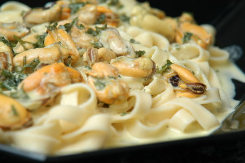

| Zutaten für 4 Personen: | |
| 3 kg | frische Miesmuscheln |
| 1 dl | Weisswein |
| 2 dl | Wasser |
| 2 Prisen | Safran |
| 1/2 Bund | Petersilie |
| 200 g | Cantadou Curry |
| 400 g | Nudeln |
Die Muscheln waschen und in Weisswein und Wasser mit Petersiliestengel und Safran zugedeckt ca. 6 Minuten dämpfen und aus dem Sud heben.
2.5 dl Sud absieben und aufkochen. Cantadou Curry und die gehackte Petersilie dazu schlagen und vom Feuer nehmen.
Gleichzeitig die Teigwaren kochen.
Die aus den Schalen gelösten Muscheln zur Sauce geben und unter die al dente gekochten Nudeln mischen.
Werbebeilage für Cantadou Käse
Wieso bekomme ich in der Migros keinen Cantadou Curry? Haben die das aus dem Sortiment gestrichen? Die Sauce wird sehr flüssig. Schmeckt ganz ordentlich. Nichts für Sandra, die keine Muscheln mag. RE 9.1.2009
@LINKBACK_TAG@ @WAKELOCK@